ActD Consulter ses projets
UMLActivity
Untitled
::
Projet
::
ActD Consulter ses projets
Description
none
Diagrams

ActD Consulter ses projets
Groups
Utilisateur
SI
BDD
Edges
(InitialNode1→Voir les projets)
(Voir les projets→Demander les projets de l'utilisateur)
(Demander les projets de l'utilisateur→Envoyer la liste des projets de l'utilisateur)
(Envoyer la liste des projets de l'utilisateur→Afficher la liste des projets)
(Afficher la liste des projets→ActivityFinalNode1)
Properties
Name
Value
name
ActD Consulter ses projets
stereotype
null
visibility
public
isReentrant
true
isReadOnly
false
isSingleExecution
false
Owned Elements
ActD Consulter ses projets